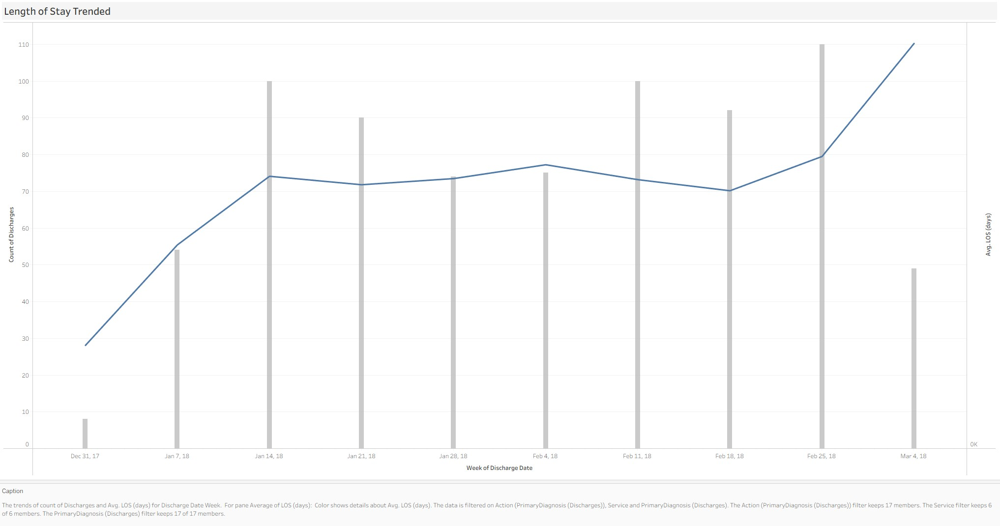
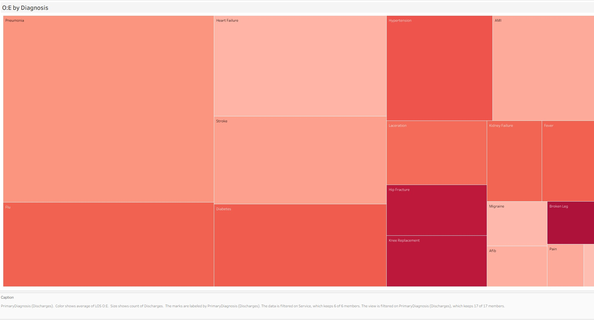
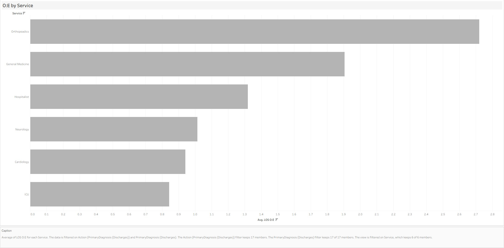
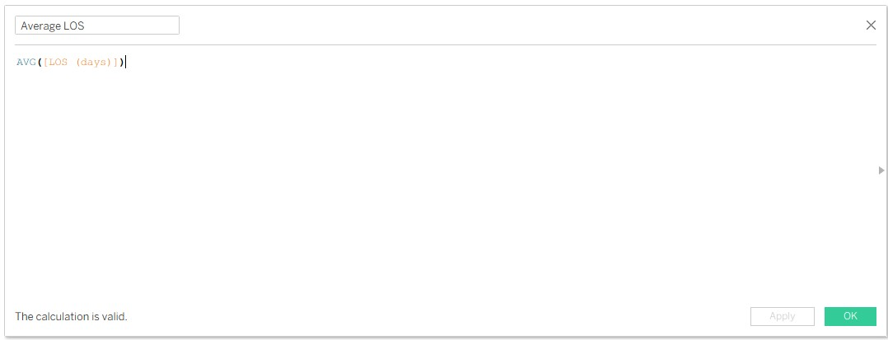
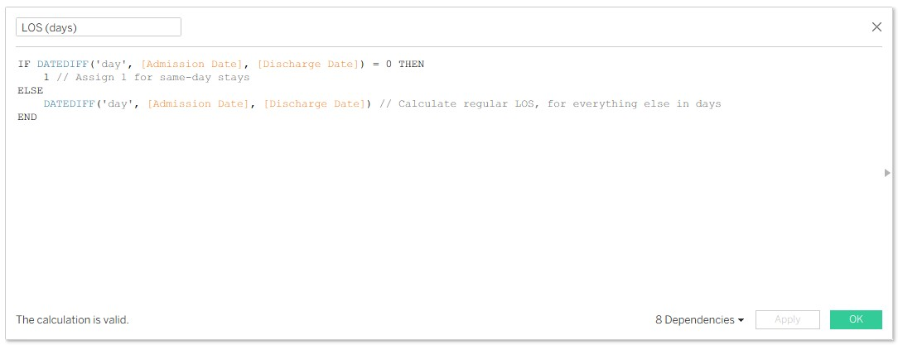
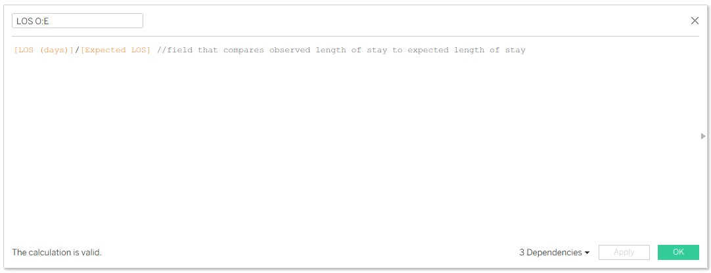
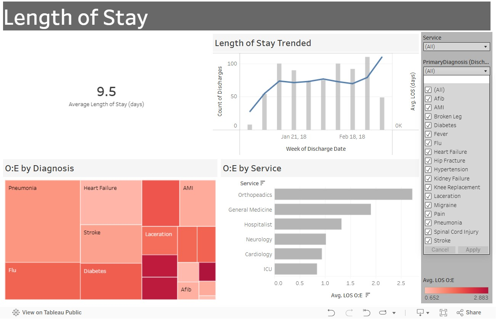

Explore visual insights into hospital performance, discharge efficiency, and patient throughput.
🛏️ Average Length of Stay (9.5 days): Benchmarking hospital stay durations to identify inefficiencies and optimize discharge planning.

📈 LOS Trends: Weekly discharges benchmarked against average LOS—revealing shifts in stay durations.

🧪 Diagnosis Variance: Heat map comparing observed vs expected LOS across primary diagnoses.

📊 Service Line Benchmarking: Measuring LOS performance across departments.

📐 Average LOS Formula: DATEDIFF logic to calculate LOS per patient record.

📐 LOS Calculation Logic: Adjusts for same-day discharges for accurate LOS reporting.

📊 O/E LOS Classification: Categorizing cases based on variance from expected benchmarks.

📊 Comprehensive Dashboard: Tableau visualization comparing average and expected LOS across services.